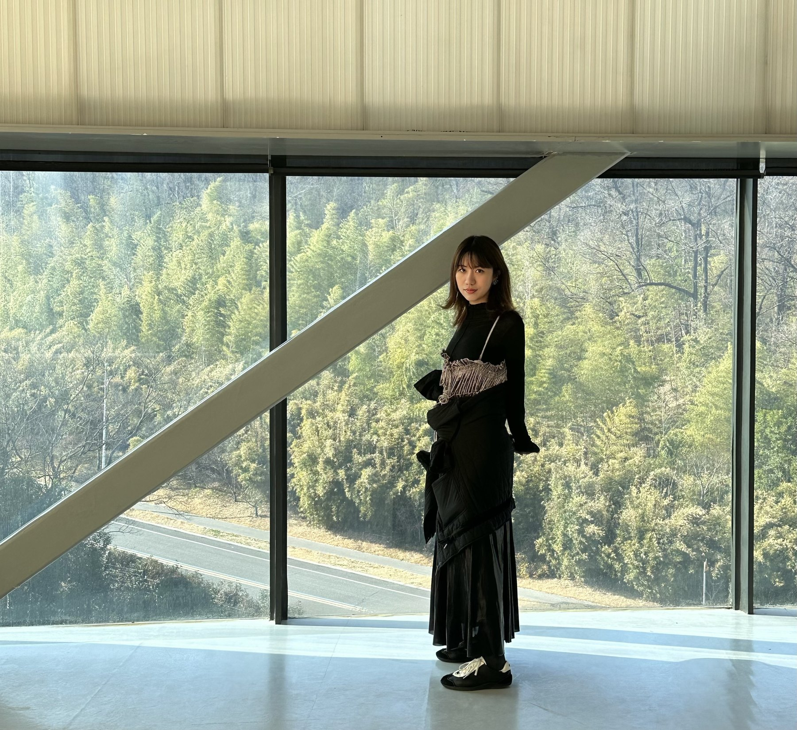

夏普株式会社
负责上流设计与 ABAP 后端开发。在深入理解业务需求的同时，积极对应众多用户的定制化需求，深化了对 B2B 领域的专业认知，并在复杂业务流程的处理上积累了丰富经验。
从平面设计到 ERP 设计，我参与过多种形式的设计工作。在这一过程中，我始终以倾听人的需求为起点，不断探寻更新、更好的体验。\n随着技术的不断发展与赋能，每个人实现想法的能力与机会都在增加。拥有设计的主动权，将创造力转化为切实的现实，是我最核心的竞争力。

目前在夏普株式会社参与企业 ERP 推进，把业务理解、上流设计与后端开发连接起来。
负责上流设计与 ABAP 后端开发。在深入理解业务需求的同时，积极对应众多用户的定制化需求，深化了对 B2B 领域的专业认知，并在复杂业务流程的处理上积累了丰富经验。
我始终投身于自己热爱的领域，从小说创作、品牌插画，到漫画广告、新闻视觉与动画分镜，持续提升自身的业务能力与制作经验。
其中一部作品累计订阅人次超过 2 万。写作让我进一步掌握了如何构建完整的世界观并把控叙事节奏，也让我深刻体会到文学创作同样是吸引用户的一种有效方式，对理解用户喜好起到了关键作用。
参与文化传媒相关项目，在实际协作中积累内容制作经验。
参与漫画式广告制作。
参与新闻相关插画制作。
参与动画分镜制作，提升了对连贯动作的把控能力。
绘画训练、动画与设计教育，以及围绕人与生活的设计研究，共同构成了我的方法基础。
围绕人、生活与设计继续学习，把视觉实践延伸到用户研究、服务设计、交互与原型。
建立动画、视觉设计与数字制作基础，并通过校内外实践接触海报、品牌内容与动画分镜。
长期的绘画训练培养了我细致观察细节的能力，也为后续所有的设计工作奠定了坚实的基础。